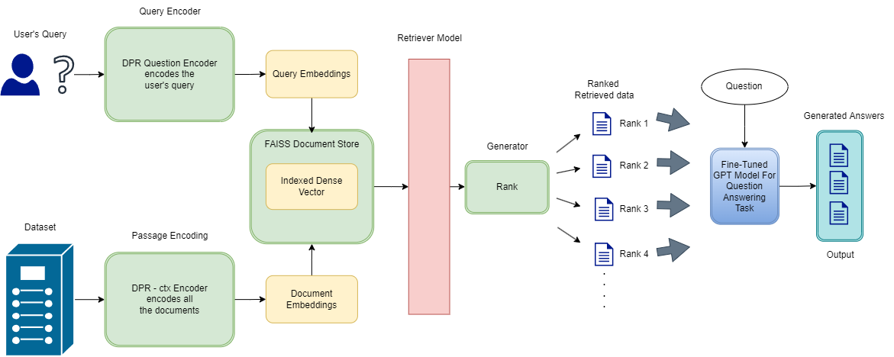
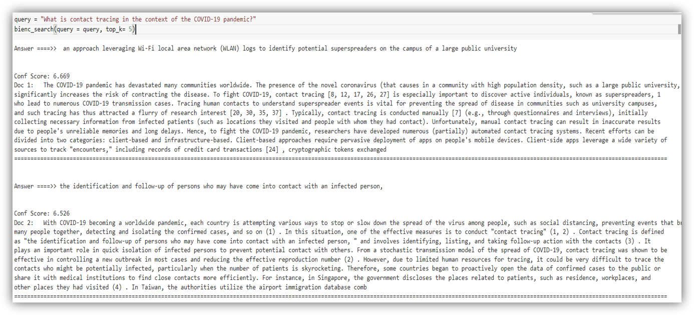
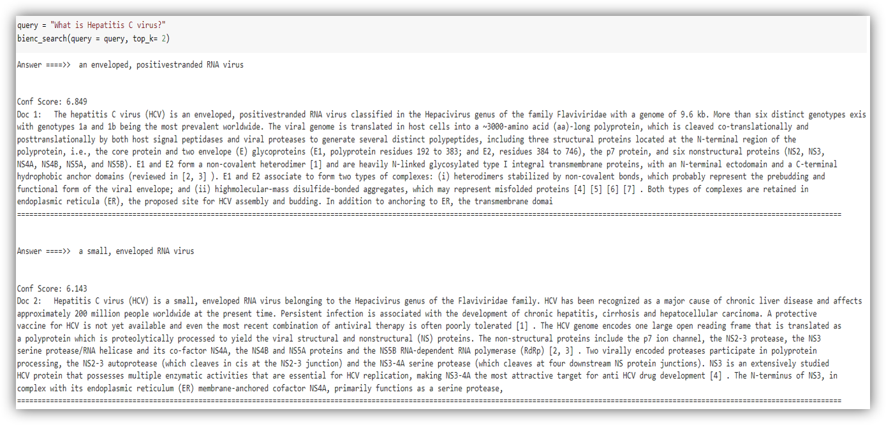

Abstract
The scarcity of authentic information has always been a major
inconvenience. Very few of us have access to authentic information and
guidelines. To solve this problem, We made SciRet, a Generative QA
system that retrieves data from datasets consisting of scientific research
papers to provide authentic and informative information to the general
public. To build this system and test it, we took a document of 1,000,000
Corona Virus related literature, made accessible through the “Coronavirus
Open Research Dataset Challenge (CORD-19)”. Upon retrieving the data
successfully, our QA System generates accurate, informative & simple
answers to user's queries. We hope that our system will help a lot of people,
as authentic information is very significant and can help everyone
Introduction
SciRet is a system that will retrieve authentic and informative data from a
dataset of scientific research papers, simplify them for the sake of general
people’s understanding, and provide one or multiple accurate answers to a
user’s query. We are using a fine-tuned RAG model as a retriever and a
GPT-3 model as a generator. After retrieving the data from the dataset, our
generator will simplify the data so that the mass population can understand
it, and provide answers in 3 difficulty levels - (i) General, (ii) Intermediate &
(iii) Expert, so that people from any background can get an answer that can
be helpful. Scientific research papers have always been a great source of
information, but its often of no help to mass population for its complexity and
scarcity. We are hopeful that our system will bring a solution to this problem.
Dataset
In response to the COVID-19 pandemic, the White House and a coalition of
leading research groups have prepared the COVID-19 Open Research
Dataset (CORD-19). CORD-19 is a resource of over 1,000,000 scholarly
articles, including over 400,000 with full text, about COVID-19, SARS-CoV�2, and related coronaviruses. This freely available dataset is provided to the
global research community to apply recent advances in natural language
processing and other AI techniques to generate new insights in support. We
choose this dataset as this is an ongoing issue and authentic information
regarding this are still very rare.
Acknowledgement
First of all, we wish to express our gratitude to our faculty advisor Dr.
Mohammad Ashrafuzzaman Khan, who expertly guided us in our project
throughout the whole CSE499. Sir had discussions with us regarding our
project on a regular basis. We have completed this project under his
guidance and supervision. Also, our gratitude is divine to the North South
University, ECE department for providing us a good environment to work in.
System Architecture

Result


Result Discussion
By far our system could successfully detect passages based on Given query by
users and rank them using cosine similarity function. Though our system don't
work fine in terms of unique words or question, but it works great when the
situation is to detect passages that have similar kinds of information.
Project impact
The way we see it, the current state of our model is just the beginning. As it’s a
Generative QA model, it can be used in Chatbots, Question Answering
Systems, Guideline systems, Information poles, Governmental Information
sites, educational websites and lots which can generate revenue along with
helping mass people. Just by changing the data frame and keeping the model
intact, this can be used as a QA system for any topic. If we face another
pandemic in any time soon, this model will be ready to use as soon as we have
a new dataset of information in hand.
Conclusion
Our main goal was to retrieve and generate informative data, our QA
System is very capable of doing it already. Now, we are trying to make
the retriever more accurate to generate better embedding and retrieve
more accurately and make the generator capable of generating longer
and more informative answers.